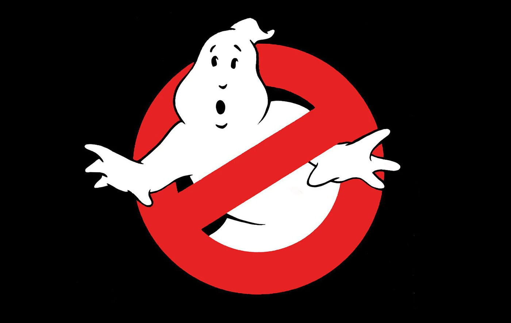

Ghostbusters (1984)
Movie Quotes
Scene One
Dr. Peter Venkman: "What I'd really like to do is talk to Dana. Dana? It's Peter."
Dana Barrett: "There is no Dana, there is only Zuul."
Dr. Peter Venkman: "Oh, Zuulie, you nut, now c'mon. Just relax, c'mon. I want to talk to Dana. Dana, Dana. "Can I talk to Dana?
Dana Barrett: "in an inhuman demonic voice There is no Dana, only Zuul!"
Dr. Peter Venkman: "What a lovely singing voice you must have."
Scene Two
Dr. Peter Venkman: "This city is headed for a disaster of biblical proportions."
Mayor: "What do you mean, 'biblical?'"
Dr Ray Stantz: "What he means is Old Testament, Mr. Mayor, real wrath of God type stuff."
Dr. Peter Venkman: "Exactly."
Dr Ray Stantz: "Fire and brimstone coming down from the skies! Rivers and seas boiling!"
Dr. Egon Spengler: "Forty years of darkness! Earthquakes, volcanoes..."
Winston Zeddemore: "The dead rising from the grave!"
Dr. Peter Venkman: "Human sacrifice, dogs and cats living together... mass hysteria!"
Mayor: "All right, all right! I get the point!"
Scene Three
[clearing away tables in the dining room to make room for the ghost trap]
Dr Ray Stantz: I've gotta get this in the clear...!
Dr Ray Stantz: Wait, wait, wait! I've always wanted to do this...
[He yanks a tablecloth off of a table, overturning and shattering everything except the centerpiece in the middle]
Dr. Peter Venkman: [triumphantly] And the flowers are still standing!